Parallel Perceptions
A physical installation speculating on an alternate reality where humans can perceive the lifeforce of plants. Using projection mapping and proximity tracking, ripples of light spread across a Pink Anthurium on your approach with varying intensity depending on how close you get. Visualising phototropism and plant awareness, encouraging a more attentive, respectful relationship with nature.
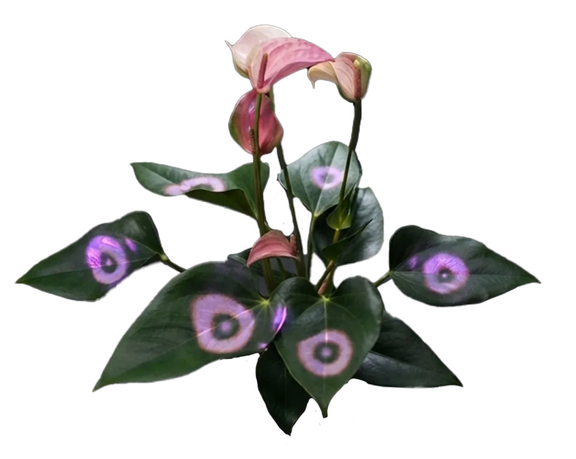
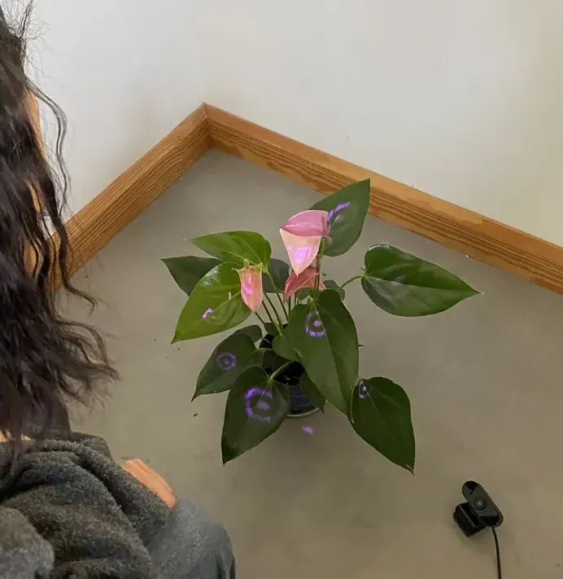
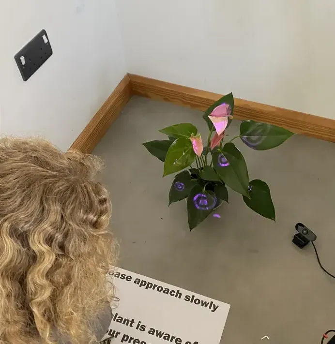
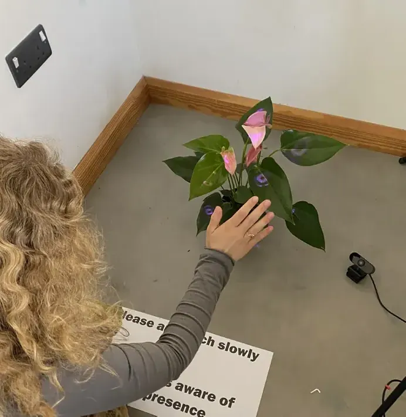
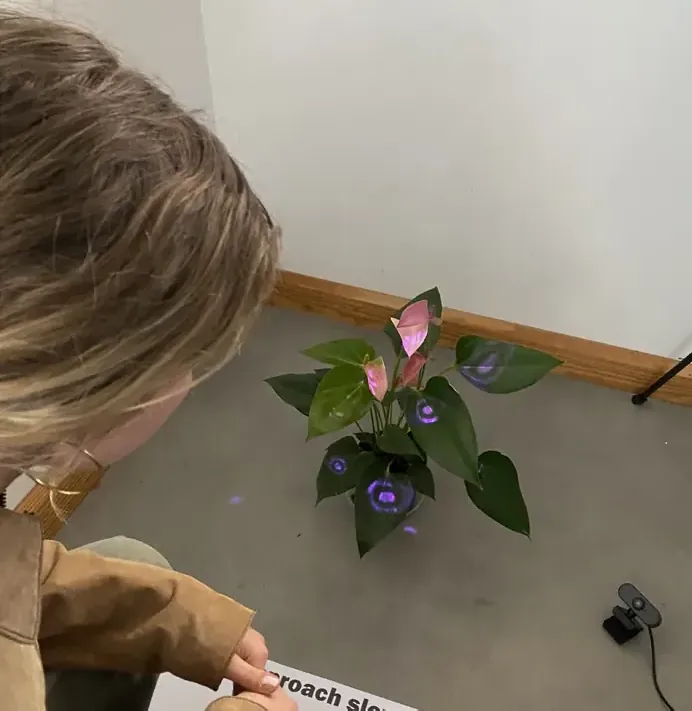
Try it
Move towards the plant. As in the installation, the leaves respond to how close you are: the nearer you come, the more colour the ripples gain and the faster they move. Step away and they settle.
How it came together
Mapping each leaf
Each leaf was mapped by hand in Kantan Mapper, inside TouchDesigner, so the light falls on the leaves alone.
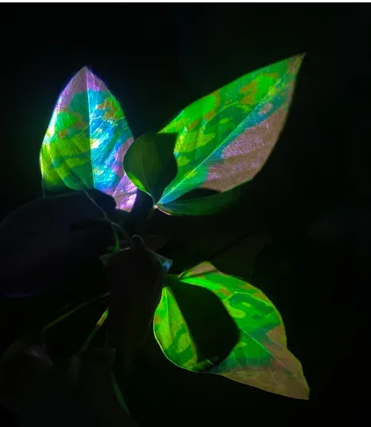
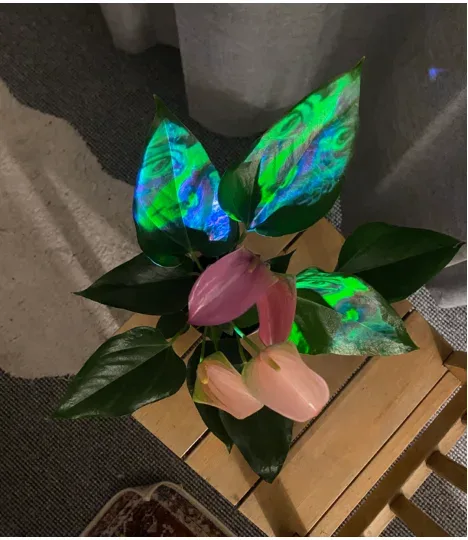
A heartbeat for the plant
Ripples have a natural cadence, almost like a heartbeat, quickening as you come closer and settling as you step away. I made them pink, the colour of the plant’s own spathes, so the light reads as an extension of the plant rather than something cast onto it.
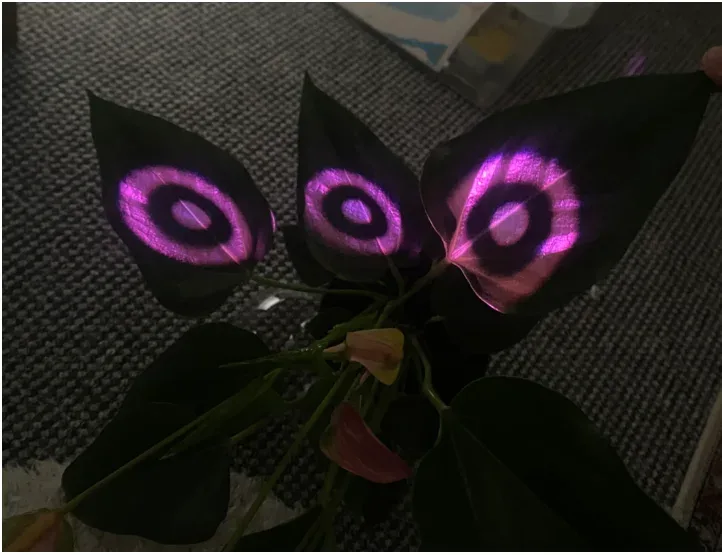
Sensing you
MediaPipe, through Torin Blankensmith’s open-source TouchDesigner plugin, tracks how close your face is to the plant. That distance drives both the colour and the speed of the ripples.
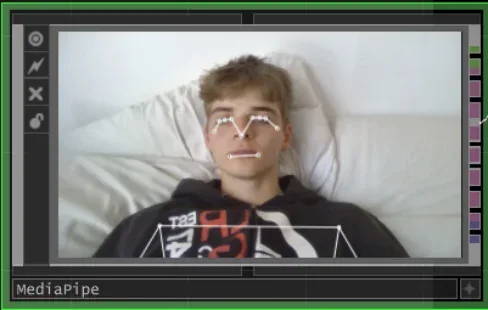
The setup
A projector on a tripod, a webcam, a laptop and the plant, positioned so every visible leaf could be mapped.
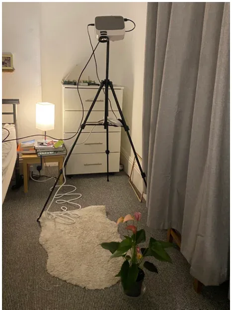
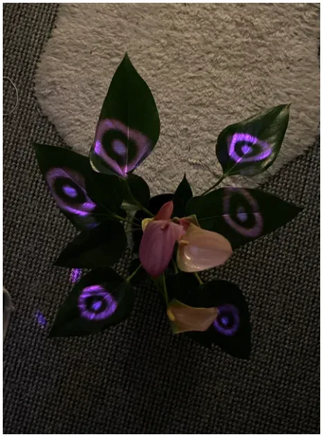